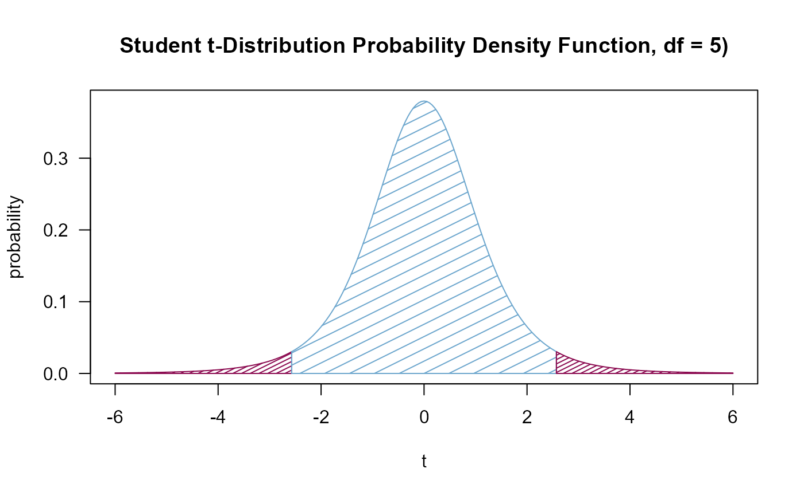

Sometimes the area under a density curve has to be color shaded, for
instance to illustrate a p-value or a specific region under the normal
curve. This function draws a curve corresponding to a function over the
interval [from, to]. It can plot also an expression in the variable
xname, default x.
Usage
shade(expr, col = par("fg"), breaks, density = 10, n = 101, xname = "x", ...)Arguments
- expr
the name of a function, or a
callor anexpressionwritten as a function ofxwhich will evaluate to an object of the same length asx.- col
color to fill or shade the shape with. The default is taken from
par("fg").- breaks
numeric, a vector giving the breakpoints between the distinct areas to be shaded differently. Should be finite as there are no plots with infinite limits.
- density
the density of the lines as needed in polygon.
- n
integer; the number of x values at which to evaluate. Default is 101.
- xname
character string giving the name to be used for the x axis.
- ...
the dots are passed on to
polygon.
Details
Useful for shading the area under a curve as often needed for explaining significance tests.
See also
Other geometry:
arc(),
band(),
bezier(),
canvas(),
polarGrid(),
polygon(),
rotate(),
transformXY()
Examples
curve(dt(x, df=5), xlim=c(-6,6),
main=paste("Student t-Distribution Probability Density Function, df = ", 5, ")", sep=""),
type="n", las=1, ylab="probability", xlab="t")
shade(dt(x, df=5), breaks=c(-6, qt(0.025, df=5), qt(0.975, df=5), 6),
col=c("deeppink4", "skyblue3"), density=c(20, 7))
